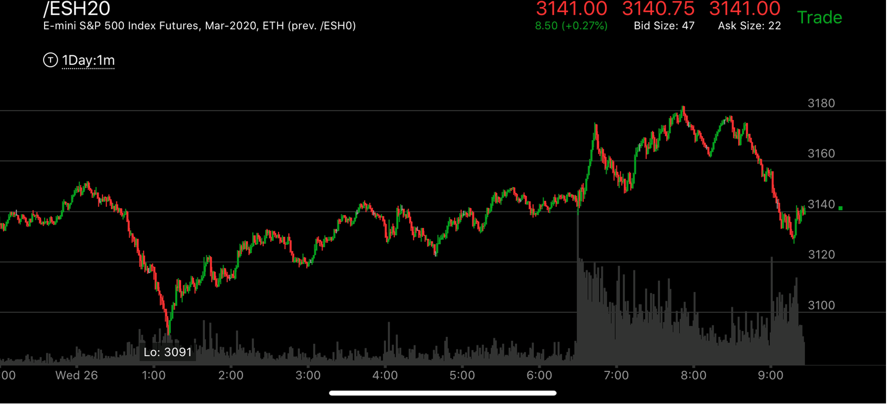

一浪反转走势
- 一浪反转，必须是它开始的时候就是以一浪开始的。这样它在越过前面的某个范围后，快速前进，在幅度和速度上都超过开始的浪，形成了一浪反转。如果开始并非如此，
那么需要在越过范围后，两次出现相对弱势才算反转。

图示:1：00的时候，它从底部快速上涨，这个其实就是第一浪上涨，这样的走势其实是比较虚弱的。但是也是一种开始，而且也会造成很大幅度的反弹。
所以不可以忽视。在越过前面走势的阻力点后，早晨开盘，它猛烈大涨，幅度和速度都超过了第一浪。这样就反转了。可以看到它反转的时候，在高处形成了下跌的相对弱势。8：00的点更高，下跌速度更慢。
所以即使是一浪反转也是需要相对弱势的。